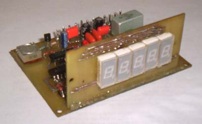
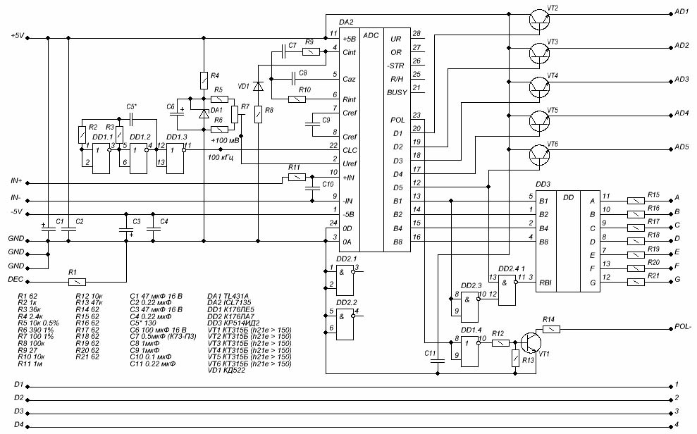
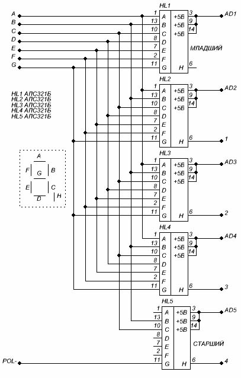
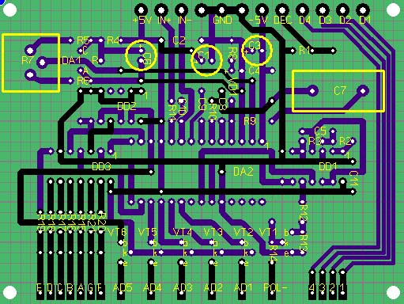
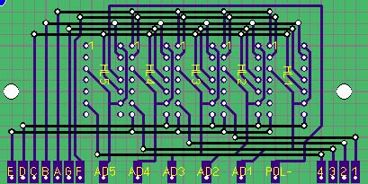
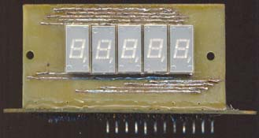
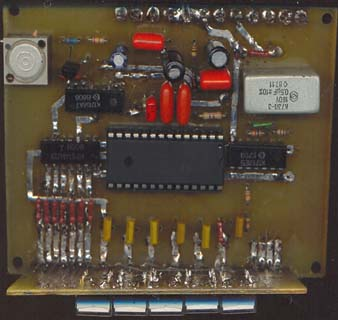
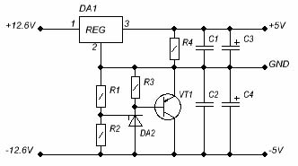

Встраиваемый цифровой вольтметр с диапазоном измерения -199.99 ... +199.99 мВ

Назначение
Высокоточный встраиваемый цифровой вольтметр разработан для использования в измерительных приборах [1].
Технические характеристики:
Схема электрическая принципиальная
Вольтметр конструктивно разбит на две части - аналого-цифровой преобразователь (АЦП) и светодиодный индикатор. Схема АЦП показана на рис. 1, светодиодного индикатора - на рис. 2.

Рис. 1. Схема электрическая принципиальная АЦП цифрового вольтметра.

Рис. 2. Схема электрическая принципиальная светодиодного индикатора цифрового вольтметра.
Вольтметр собран на микросхеме DA2 ICL7135, которая выполняет функцию АЦП с двойным интегрированием, автоматической коррекцией нуля и определением полярности входного сигнала. Режим работы АЦП определяется параметрами навесных элементов R10, C7 - C9. Внешний тактовый генератор АЦП частотой 100 КГц собран на микросхеме DD1 К176ЛЕ5, точное значение частоты задается подбором емкости конденсатора C5. Источник опорного напряжения +100 мВ АЦП выполнен на микросхеме DA1 TL431 с навесными элементами R4R5R6R7C6. Измеряемое напряжение (пределы -199.99 ... +199.99 мВ) подается на контакты IN+, IN-, потенциал которых может быть произвольным в пределах диапазона питающих напряжений. Цепь R11C10 выполняет функцию фильтра нижних частот (ФНЧ). Транзисторы VT2 - VT6 и дешифратор DD3 (КР514ИД2) образуют устройство динамической индикации. Логический узел на микросхеме DD2 (К176ЛА7) позволяет корректно отображать цифру старшего разряда (0 или 1). К выходу АЦП подключается 4.5-декадное цифровое табло с 7-сегментными светодиодными индикаторами с общим анодом типа АЛС321Б (АЛС324Б). При построении измерительных приборов для отображения запятой в нужном разряде один из входов D1 - D4 подключается к выходу DEC АЦП.
Конструкция
Вольтметр состоит из двух печатных плат, на одной из которых собран АЦП с навесными элементами, а на другой - цифровое табло (рис. 3, 4). Платы могут крепиться друг к другу под необходимым углом или могут быть разнесены. Соединение осуществляется пайкой или с помощью кабеля. Внешний вид встраиваемого цифрового вольтметра показан на рис. 5, 6.

Рис. 3. Эскиз печатной платы АЦП вольтметра.

Рис. 4. Эскиз печатной платы светодиодного индикатора вольтметра.

Рис. 5. Встраиваемый цифровой вольтметр (вид спереди).

Рис. 6. Встраиваемый цифровой вольтметр (вид сверху).
Схема питания вольтметра от однополярного источника напряжением 12.6 вольт (аккумулятор)
Для получения двухполярного напряжения +5 вольт из однополярного +12.6 вольт (аккумуляторная батарея) может использоваться источник питания по схеме рис. 7. В схеме источника используются два стабилизатора напряжения: последовательный - DA1 (КР142ЕН5А, 7805) и параллельный - DA2 (TL431). Транзистор VT1 (КТ837У) служит для повышения нагрузочной способности параллельного стабилизатора. Номиналы резисторов: R1 - 680 Ом, R2 - 680 Ом, R3 - 62 Ом, R4 - 300 Ом; конденсаторов: C1, C2 0.22 мкФ, C3, C4 22 мкФ 16 В.

Рис. 7. Схема электрическая принципиальная двухполярного источника питания вольтметра от аккумулятора 12.6 В.
Состояние разработки:
Встраиваемый цифровой вольтметр предполагается использовать при конструировании различных измерительных приборов, работающих от сети переменного тока или бортовой сети автомобиля, источников питания и аккумуляторных батарей.
Ссылки:
26.02.2014
Альтернативные источники энергии
Компьютеры и
Интернет
Магнитные поля
Механотронные системы
Перспективные
разработки
Электроника и технология